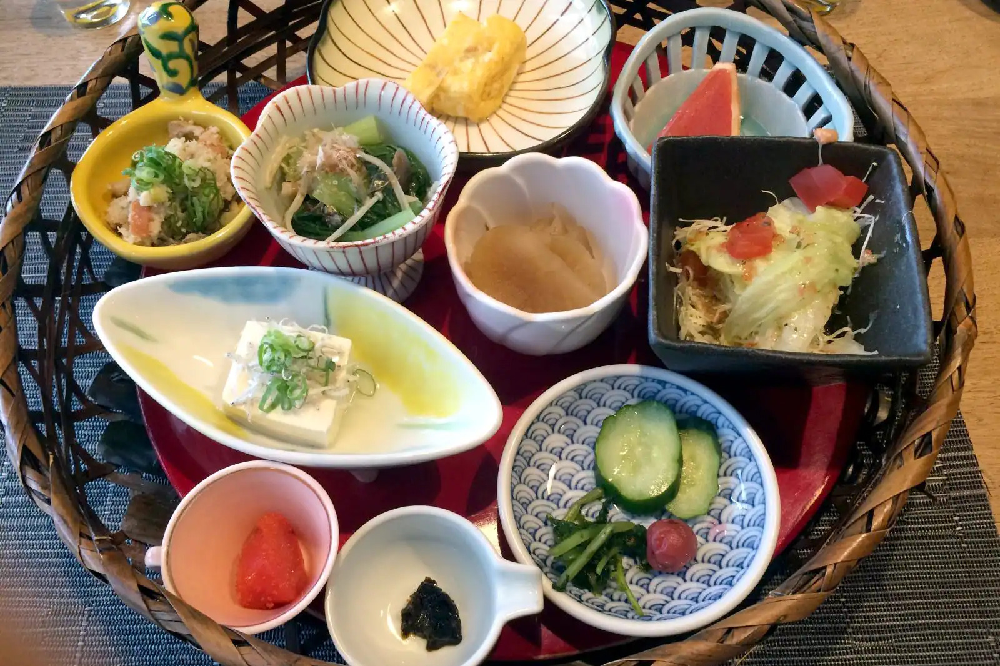

-
Traditional Kyoto-style course meals (Kyo kaiseki)
Kyo kaiseki is served on occasions such as chaji, a formal multi-course dinner followed by tea ceremony, or chakai which is a light meal or sweets accompanied with tea. It originated from the traditional tea ceremony, where guests are welcomed with a light meal before offered with a thick and strong tea that might upset an empty stomach.
-
Soba noodles with dried herring (nishin soba)
In Kyoto, nishin soba is the go-to noodle dish on New Year’s Eve (toshikoshi soba). Kyoto is far from the sea, so dried fish such as dried herrings (migaki nishin) from Hokkaido transported by cargo ship (kitamae bune) were a precious source of nutrition. This is the background to the development of dishes carefully prepared with dried fish.
-
Buddhist vegetarian cuisine (shojin ryori)
There are many varieties of vegetarian cuisine in Kyoto, but the pick of the bunch is shojin ryori, which was developed in the temples of Zen Buddhism and deeply influenced by Chinese Buddhism. All animal-based ingredients and vegetables with a strong smell – garlic, green onion, Chinese chives, onions, and Japanese scallion – are strictly off the menu.
-
Boiled tofu (yu dofu)
In the cold of winter, yu dofu (boiled bean curd) really hits the spot. You can find many Yu Dofu speciality restaurants in front of the gates of Nanzen-Ji, where locals say this dish originated from. Tofu mainly consists of water, so thankfully, Kyoto's groundwater and spring water is mild and soft, which is excellent for drawing out its delicate and rich taste.
-
Kyoto-style home cooking (obanzai)
Obanzai is a home-cooking style dish that uses every last scrap of seasonal ingredients, like Kyoto vegetables (Kyo-yasai), usually seasoned with dashi stock. It’s understandable if you feel a bit hesitant about going to a high-end traditional restaurant (ryotei) or trying kaiseki ryori, since these are not exactly familiar – and cheap – experiences.
-
Kuzu starch noodles (kuzukiri)
Kuzukiri is Kyoto’s quintessential summer confectionery. The typical way to eat it is by slurping the thin and long noodles, made purely from arrowroot starch grown in Yoshino and fresh water, together with a rich brown sugar syrup. And you’d better be quick, because kuzukiri is at its best only for 15 minutes after it has been made!
-
 Beef cutlet (gyu katsu)
Beef cutlet (gyu katsu)In the food culture of the Kansai area, people tend to prefer beef to pork - in fact, the word 'meat' typically means beef in this region. Beef cutlet (gyu katsu) is a dish that has become popular in the Kanto region, too. This local gourmet food from Kyoto is perfected by being cooked until medium-rare. Thickly sliced and covered with fine bread crumbs, the cutlets are then fried rapidly in fresh oil. Some restaurants even let you choose your favourite cuts of beef. People typically enjoy this dish with Japanese seasonings or spices, such as soy sauce with wasabi, salt with Japanese pepper (sansho), and grated Japanese radish.
-
Mackerel sushi (sabazushi)
Mackerel sushi (sabazushi) is the quintessential sushi of Kyoto. Given Kyoto’s distance from the sea, mackerel fished in Wakasa Bay were first marinated with salt before it's transported to Kyoto, taking a whole day to pass through the route called Mackerel Road (Saba Kaido).